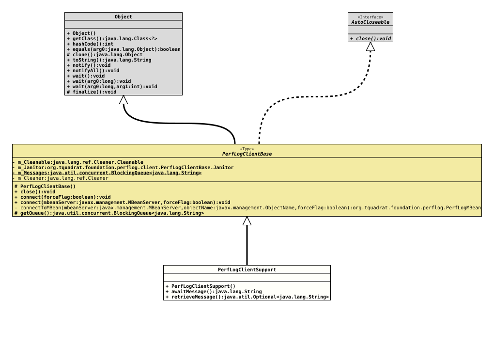

Class PerfLogClientSupport
java.lang.Object
org.tquadrat.foundation.perflog.client.PerfLogClientBase
org.tquadrat.foundation.perflog.client.PerfLogClientSupport
- All Implemented Interfaces:
AutoCloseable
@ClassVersion(sourceVersion="$Id: PerfLogClientSupport.java 1248 2026-05-17 11:08:34Z tquadrat $")
@API(status=STABLE,
since="0.25.0")
public final class PerfLogClientSupport
extends PerfLogClientBase
An implementation of
PerfLogClientBase.
This class provides a simple API for a client for the Foundation
Performance Logging and Monitoring. Basically, this is a recipient for the
Notification
messages that are sent each time a
performance
section was left.
It can be used like this
01/** 02 * Receive the Performance Logging and Monitoring Notifications and 03 * process them. 04 */ 05public final void run() 06{ 07 final var mbeanServer = obtainMBeanServer(); 08 try( final var clientSupport = new PerfLogClientSupport() ) 09 { 10 clientSupport.connect( mbeanServer, true ); 11 var proceed = true; 12 while( proceed ) 13 { 14 try 15 { 16 final var message = clientSupport.awaitMessage(); 17 // Process the message!! 18 } 19 catch( final InterruptedException _ ) 20 { 21 proceed = false; 22 } 23 } 24 } 25 catch( final InstanceNotFoundException e ) 26 { 27 throw new UnexpectedExceptionError( "Should not happen as we set force = 'true' when connecting", e ); 28 } 29} // run()
- Author:
- Thomas Thrien (thomas.thrien@tquadrat.org)
- Version:
- $Id: PerfLogClientSupport.java 1248 2026-05-17 11:08:34Z tquadrat $
- Since:
- 0.25.0
- UML Diagram
-

UML Diagram for "org.tquadrat.foundation.perflog.client.PerfLogClientSupport"
{kind=link}
-
Constructor Details
-
PerfLogClientSupport
public PerfLogClientSupport()Creates a new instance ofPerfLogClientSupport.
-
-
Method Details
-
awaitMessage
Waits for an incoming message.- Returns:
- The message.
- Throws:
InterruptedException- An interrupt occurred while waiting.
-
retrieveMessage
-